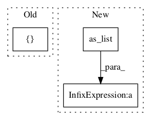

135a56e0935fbb04811f8ce7b9f514f498212f71,niftynet/layer/crf.py,,permutohedral_compute,#Any#Any#Any#Any#Any#Any#Any#,335

Before Change
splat = tf.contrib.framework.local_variable(
tf.ones([0, 0]), validate_shape=False, name="splatbuffer")
with tf.control_dependencies([splat.initialized_value()]):
initial_splat = tf.zeros(
[tf.shape(blur_neighbours1[0])[0] + 1, batch_size, n_ch_data + 1])
reset_splat = tf.assign(splat, initial_splat, validate_shape=False)
After Change
num_simplex_corners = barycentric.shape.as_list()[-1]
n_ch = num_simplex_corners - 1
batch_size = data_vectors.shape.as_list()[0]
n_ch_data = data_vectors.shape.as_list()[-1]
data_vectors = tf.reshape(data_vectors, [-1, n_ch_data])
// Convert to homogeneous coordinates
data_vectors = tf.concat(
[data_vectors, tf.ones_like(data_vectors[:, 0:1])], 1)
// Splatting
with tf.variable_scope(name):
splat = tf.contrib.framework.local_variable(
tf.constant(0.0), validate_shape=False, name="splatbuffer")
//with tf.control_dependencies([splat.initialized_value()]):
initial_splat = tf.zeros(
[tf.shape(blur_neighbours1[0])[0] + 1, batch_size, n_ch_data + 1])
reset_splat = tf.assign(splat, initial_splat, validate_shape=False)
with tf.control_dependencies([reset_splat]):
for scit in range(num_simplex_corners):
data = data_vectors * barycentric[:, scit:scit + 1]
splat = tf.scatter_nd_add(splat, indices[scit], data)
// Blur with 1D kernels
for dit in range(n_ch, -1, -1) if reverse else range(n_ch + 1):
b1 = tf.gather(splat, blur_neighbours1[dit])
b3 = tf.gather(splat, blur_neighbours2[dit])
splat = tf.concat([
splat[:1, ...], splat[1:, ...] + 0.5 * (b1 + b3)], 0)
// Alpha is a magic scaling constant from CRFAsRNN code
alpha = 1. / (1. + np.power(2., -n_ch))
normalized = splat[..., :-1] / (splat[..., -1:] + 1e-20)
// Slice
sliced = tf.gather_nd(normalized, indices[0]) * barycentric[:, :1] * alpha
for scit in range(1, num_simplex_corners):
In pattern: SUPERPATTERN
Frequency: 3
Non-data size: 3
Instances
Project Name: NifTK/NiftyNet
Commit Name: 135a56e0935fbb04811f8ce7b9f514f498212f71
Time:
Author: null
File Name: niftynet/layer/crf.py
Class Name:
Method Name: permutohedral_compute
Project Name: NifTK/NiftyNet
Commit Name: 135a56e0935fbb04811f8ce7b9f514f498212f71
Time:
Author: null
File Name: niftynet/layer/crf.py
Class Name:
Method Name: ftheta
Project Name: NifTK/NiftyNet
Commit Name: 4421754f9886233e90563eb8088348bb36024095
Time:
Author: null
File Name: niftynet/layer/loss_segmentation.py
Class Name: LossFunction
Method Name: layer_op